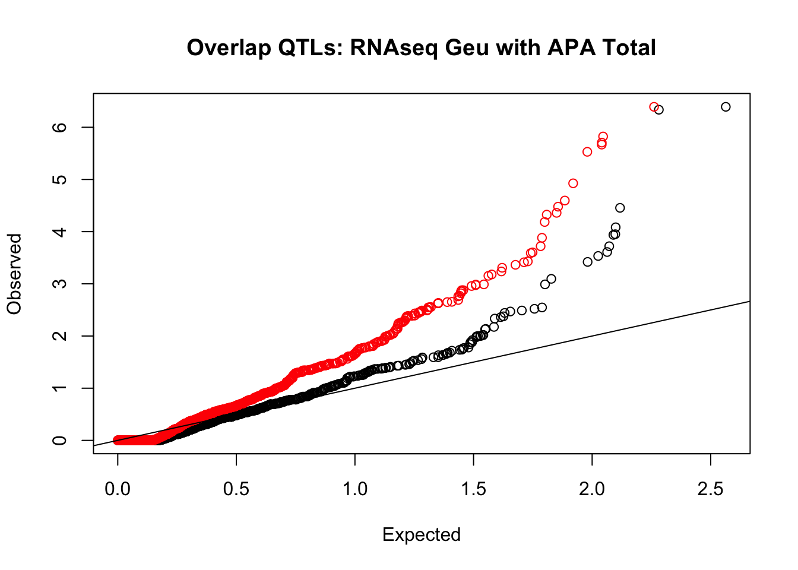
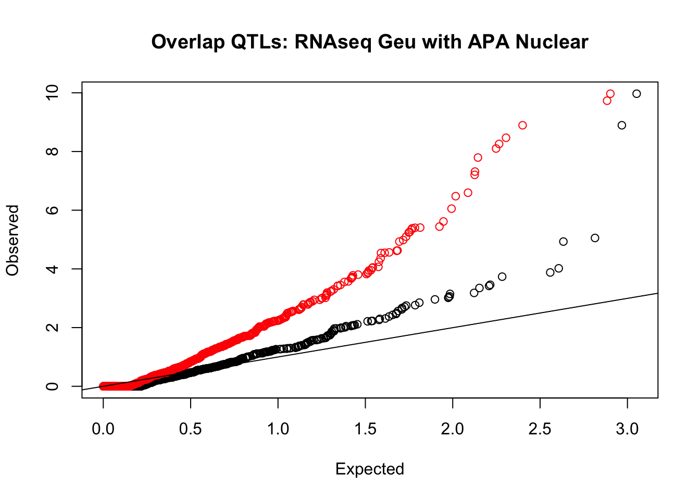
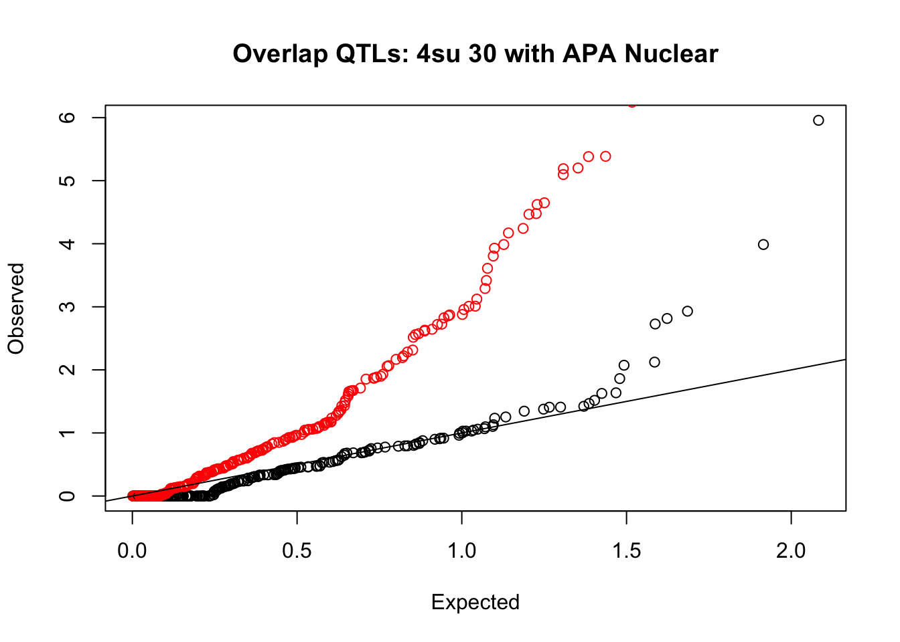
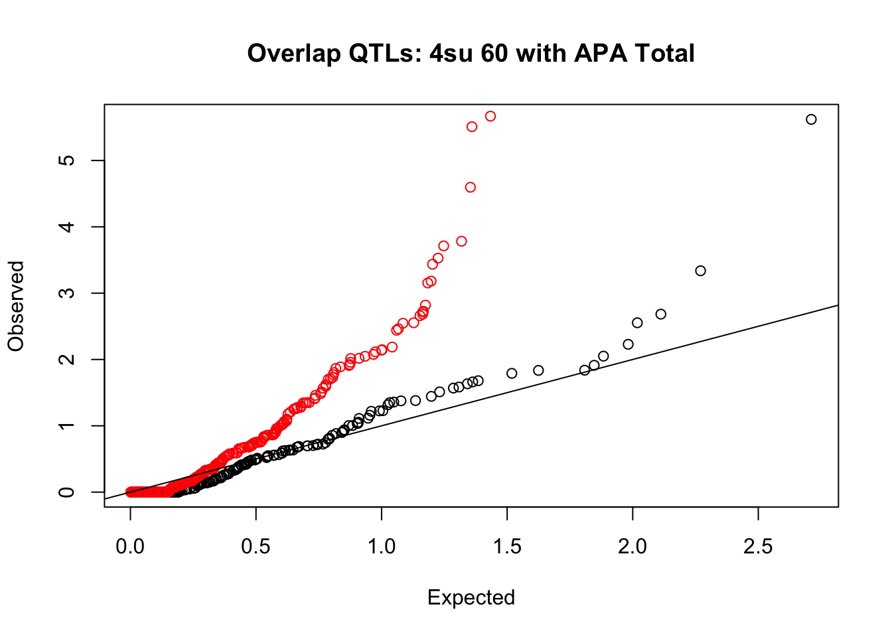
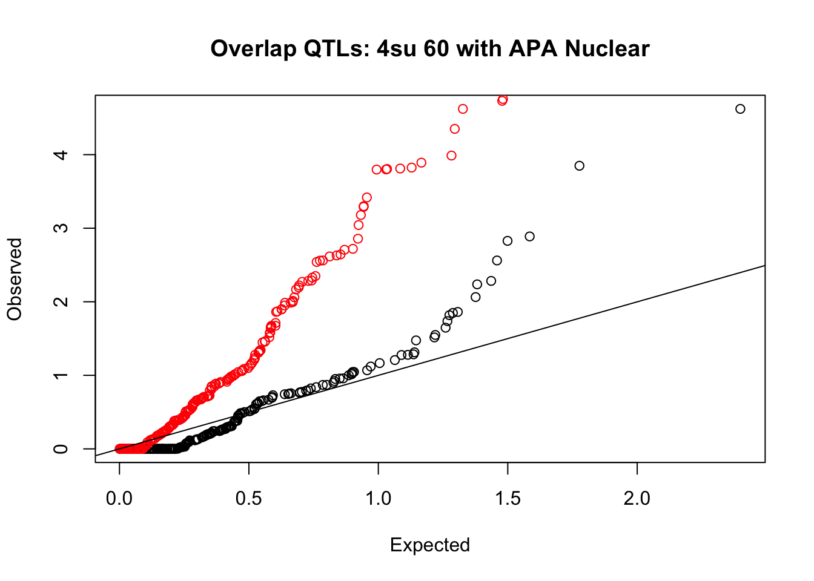
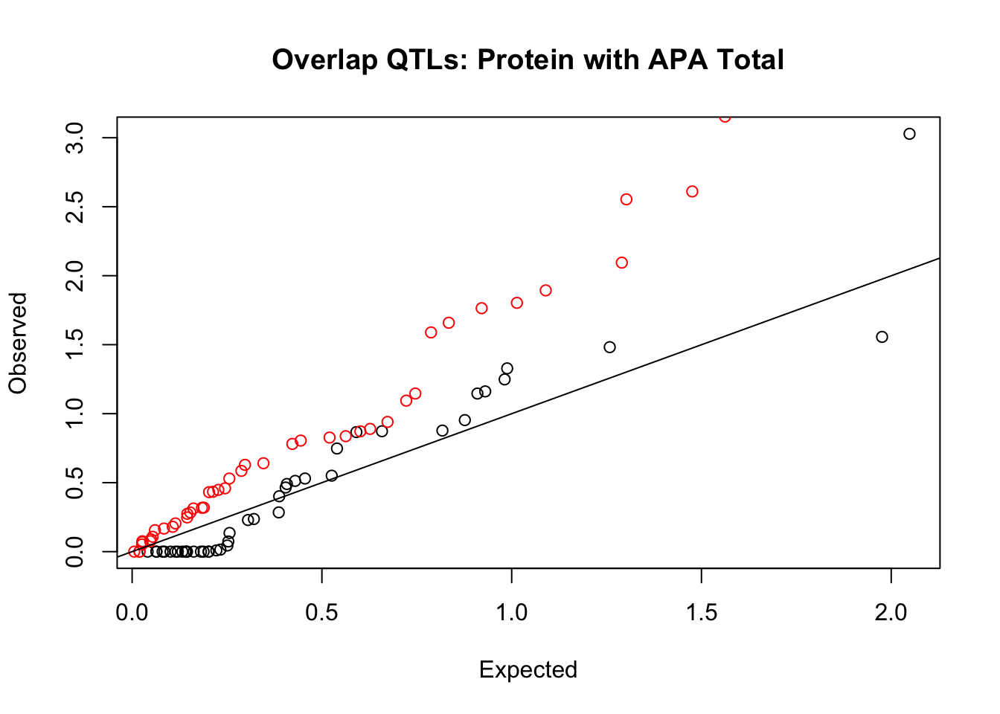

Last updated: 2018-10-05
workflowr checks: (Click a bullet for more information) ✔ R Markdown file: up-to-date
Great! Since the R Markdown file has been committed to the Git repository, you know the exact version of the code that produced these results.
✔ Environment: empty
Great job! The global environment was empty. Objects defined in the global environment can affect the analysis in your R Markdown file in unknown ways. For reproduciblity it’s best to always run the code in an empty environment.
✔ Seed:
set.seed(12345)
The command set.seed(12345) was run prior to running the code in the R Markdown file. Setting a seed ensures that any results that rely on randomness, e.g. subsampling or permutations, are reproducible.
✔ Session information: recorded
Great job! Recording the operating system, R version, and package versions is critical for reproducibility.
✔ Repository version: 10483d9
wflow_publish or wflow_git_commit). workflowr only checks the R Markdown file, but you know if there are other scripts or data files that it depends on. Below is the status of the Git repository when the results were generated:
Ignored files:
Ignored: .DS_Store
Ignored: .Rhistory
Ignored: .Rproj.user/
Ignored: analysis/figure/
Ignored: output/.DS_Store
Untracked files:
Untracked: KalistoAbundance18486.txt
Untracked: analysis/genometrack_figs.Rmd
Untracked: analysis/ncbiRefSeq_sm.sort.mRNA.bed
Untracked: analysis/snake.config.notes.Rmd
Untracked: analysis/verifyBAM.Rmd
Untracked: data/18486.genecov.txt
Untracked: data/APApeaksYL.total.inbrain.bed
Untracked: data/NuclearApaQTLs.txt
Untracked: data/RNAkalisto/
Untracked: data/TotalApaQTLs.txt
Untracked: data/Totalpeaks_filtered_clean.bed
Untracked: data/YL-SP-18486-T-combined-genecov.txt
Untracked: data/YL-SP-18486-T_S9_R1_001-genecov.txt
Untracked: data/bedgraph_peaks/
Untracked: data/bin200.5.T.nuccov.bed
Untracked: data/bin200.Anuccov.bed
Untracked: data/bin200.nuccov.bed
Untracked: data/clean_peaks/
Untracked: data/comb_map_stats.csv
Untracked: data/comb_map_stats.xlsx
Untracked: data/comb_map_stats_39ind.csv
Untracked: data/combined_reads_mapped_three_prime_seq.csv
Untracked: data/ensemble_to_genename.txt
Untracked: data/filtered_APApeaks_merged_allchrom_refseqTrans.closest2End.bed
Untracked: data/filtered_APApeaks_merged_allchrom_refseqTrans.closest2End.noties.bed
Untracked: data/first50lines_closest.txt
Untracked: data/gencov.test.csv
Untracked: data/gencov.test.txt
Untracked: data/gencov_zero.test.csv
Untracked: data/gencov_zero.test.txt
Untracked: data/gene_cov/
Untracked: data/joined
Untracked: data/leafcutter/
Untracked: data/merged_combined_YL-SP-threeprimeseq.bg
Untracked: data/mol_overlap/
Untracked: data/nom_QTL/
Untracked: data/nom_QTL_opp/
Untracked: data/nom_QTL_trans/
Untracked: data/nuc6up/
Untracked: data/other_qtls/
Untracked: data/peakPerRefSeqGene/
Untracked: data/perm_QTL/
Untracked: data/perm_QTL_opp/
Untracked: data/perm_QTL_trans/
Untracked: data/reads_mapped_three_prime_seq.csv
Untracked: data/smash.cov.results.bed
Untracked: data/smash.cov.results.csv
Untracked: data/smash.cov.results.txt
Untracked: data/smash_testregion/
Untracked: data/ssFC200.cov.bed
Untracked: data/temp.file1
Untracked: data/temp.file2
Untracked: data/temp.gencov.test.txt
Untracked: data/temp.gencov_zero.test.txt
Untracked: output/picard/
Untracked: output/plots/
Untracked: output/qual.fig2.pdf
Unstaged changes:
Modified: analysis/28ind.peak.explore.Rmd
Modified: analysis/39indQC.Rmd
Modified: analysis/PeakToGeneAssignment.Rmd
Modified: analysis/cleanupdtseq.internalpriming.Rmd
Modified: analysis/dif.iso.usage.leafcutter.Rmd
Modified: analysis/diff_iso_pipeline.Rmd
Modified: analysis/explore.filters.Rmd
Modified: analysis/overlap_qtls.Rmd
Modified: analysis/peakOverlap_oppstrand.Rmd
Modified: analysis/pheno.leaf.comb.Rmd
Modified: analysis/test.max2.Rmd
Modified: code/Snakefile
| File | Version | Author | Date | Message |
|---|---|---|---|---|
| Rmd | 10483d9 | Briana Mittleman | 2018-10-05 | add overlap QQ plots |
| html | f8a639d | Briana Mittleman | 2018-10-03 | Build site. |
| Rmd | 8314135 | Briana Mittleman | 2018-10-03 | RNA gene vendiagram |
| html | 2e0d959 | Briana Mittleman | 2018-10-01 | Build site. |
| Rmd | 9d6ee03 | Briana Mittleman | 2018-10-01 | add 4su plots |
| html | ac983db | Briana Mittleman | 2018-10-01 | Build site. |
| Rmd | 35142fb | Briana Mittleman | 2018-10-01 | overlap QTL plots |
I will use this script to overlap the molQTLs found in Call molQTL analysis with the APA QTLs I found using the transcript level annotations .
I want to ask if APA QTLs effect other molecular QTLs. The first step is to find the top snp-gene pair. The permuted value is giving me 1 snp for each peak. I need to find the top snp/peak in this file for each gene. I will then test these snps for significance at 10% fdr.
Overlap: Use the permulted molecular QTL pvalues to find the significant QTLs for each molecular phenotype I tested. Find each of these snps in the APA nominal file. Take the most stignficant pair and multiple the pvalue by the number of peaks the snp is associated with for that same gene. As a baseline for this test I will randomly choose the same number of snps from molecular QTL and test these in the APA nominal files. I can run this for the total and nuclear.
I want to do this for each of the molecular QTLs, therefore it would be best to upload the necessary files then create a script that can take any of them and create the QQplot.
Library
library(workflowr)This is workflowr version 1.1.1
Run ?workflowr for help getting startedlibrary(reshape2)
library(tidyverse)── Attaching packages ──────────────────────────────────────────────────────── tidyverse 1.2.1 ──✔ ggplot2 3.0.0 ✔ purrr 0.2.5
✔ tibble 1.4.2 ✔ dplyr 0.7.6
✔ tidyr 0.8.1 ✔ stringr 1.3.1
✔ readr 1.1.1 ✔ forcats 0.3.0── Conflicts ─────────────────────────────────────────────────────────── tidyverse_conflicts() ──
✖ dplyr::filter() masks stats::filter()
✖ dplyr::lag() masks stats::lag()library(VennDiagram)Loading required package: gridLoading required package: futile.loggerPermuted Results from APA:
nuclearAPA=read.table("../data/perm_QTL_trans/filtered_APApeaks_merged_allchrom_refseqGenes_pheno_Nuclear_transcript_permResBH.txt", stringsAsFactors = F, header = T)
totalAPA=read.table("../data/perm_QTL_trans/filtered_APApeaks_merged_allchrom_refseqGenes_pheno_Total_transcript_permResBH.txt", stringsAsFactors = F, header=T) Permuted results for other QTLs
perm_names=c("pid" ,"nvar","shape1" ,"shape2", "dummy","sid" ,"dist","npval", "slope" , "ppval" ,"bpval")
su30=read.table("../data/other_qtls/fastqtl_qqnorm_4su30.fixed.perm.out", stringsAsFactors = F,col.names = perm_names)
su60=read.table("../data/other_qtls/fastqtl_qqnorm_4su60.fixed.perm.out", stringsAsFactors = F,col.names = perm_names)
rna=read.table("../data/other_qtls/fastqtl_qqnorm_RNAseq_phase2.fixed.perm.out", stringsAsFactors = F,col.names = perm_names)
rib=read.table("../data/other_qtls/fastqtl_qqnorm_ribo_phase2.fixed.perm.out", stringsAsFactors = F,col.names = perm_names)
prot=read.table("../data/other_qtls/fastqtl_qqnorm_prot.fixed.perm.out", stringsAsFactors = F,col.names = perm_names)I will write this in multiple functions and put them together. The first function will take in the permuted results and return the significant snps at a given FDR.
First step is to take in the mol file and change the names:
geneNames=read.table("/project2/gilad/briana/genome_anotation_data/ensemble_to_genename.txt", sep="\t", header=T,stringsAsFactors = F)
file_newNames=mol_file %>% separate(pid, into=c("Gene.stable.ID", "ver"), sep ="[.]") %>% inner_join(geneNames, by="Gene.stable.ID") %>% dplyr::select("Gene.name", "nvar", "shape1", "shape2", "dummy", "sid", "dist", "npval", "slope", "ppval", "bpval")#returns significant snps given a file and a cutoff
sigsnp=function(file, cutoff){
file$bh=p.adjust(file$bpval, method="fdr")
file_sig=file %>% filter(-log10(bh)> cutoff) %>% select(Gene.name, sid)
return(file_sig)
}
testsigsnp=sigsnp(rna,1 )Next step is to choose a random subset with the same number of snps as were found significant.
#takes the file and the list of sig snps, returns a df with the same number of random snps
randomsnps=function(file, SigSnpList){
nsnp=nrow(SigSnpList)
randomSnpDF= file %>% sample_n(nsnp) %>% arrange(sid) %>% select(Gene.name,sid)
return(randomSnpDF)
}
testrandomsnps=randomsnps(rna, testsigsnp)The next step is to filter nuclear file by the snp id and gene. To do this I will join on the snpIDs then group by the snp ids. I should then be able to take the lowest Pvalue from each group and count how many are in each group to multiply by the number of tests. I will practice this with a small set then make the general function.
#filter and fix pvals
filt_tot= totalAPA %>% semi_join(testrandomsnps, by=c("Gene.name","sid") %>% group_by(sid) %>% add_tally() %>% ungroup() %>% mutate(corrPval=bpval * n)
#take top snp
filt_tot_top= filt_tot %>% group_by(sid) %>% top_n(-1, corrPval)Make this into a function for the total and nuclear:
nom_names=c("peakID", "sid", "dist", "pval", "slope")
#import total nominal
apaTotNom=read_table("/project2/gilad/briana/threeprimeseq/data/nominal_APAqtl_trans/filtered_APApeaks_merged_allchrom_refseqGenes_pheno_Total_NomRes.txt", col_names=nom_name, col_types = c(col_character(), col_character(), col_double(), col_double(), col_double()))
#import nuclear nominal
apaNucNom=read_table("/project2/gilad/briana/threeprimeseq/data/nominal_APAqtl_trans/filtered_APApeaks_merged_allchrom_refseqGenes_pheno_Nuclear_NomRes.txt", col_names=nom_name, col_types = nom_names c(col_character(), col_character(), col_double(), col_double(), col_double()))
#takes a list of snps and filters the top corrected snp for each one, returns df
top_Total=function(snp_list){
filt_tot=apaTotNom %>% separate(peakID, into=c("chr", "start", "end", "id"), sep=":") %>% separate(id, into=c("Gene.name", "strand", "peaknum"), sep="_") %>% semi_join(snp_list, by=c("sid", "Gene.name") %>% group_by(sid, Gene.name) %>% add_tally() %>% ungroup() %>% mutate(corrPval=bpval* n)
filt_tot_top= filt_tot %>% group_by(sid, Gene.name) %>% top_n(-1, corrPval)
return(filt_tot_top)
}
#same for nuclear:
top_Nuclear=function(snp_list){
filt_nuc=apaNucNom %>% separate(peakID, into=c("chr", "start", "end", "id"), sep=":") %>% separate(id, into=c("Gene.name", "strand", "peaknum"), sep="_") %>% semi_join(snp_list, by=c("sid", "Gene.name") %>% group_by(sid, Gene.name) %>% add_tally() %>% ungroup() %>% mutate(corrPval=bpval* n)
filt_nuc_top= filt_nuc %>% group_by(sid, Gene.name) %>% top_n(-1, corrPval)
return(filt_nuc_top)
}In the full script I will run this on the real QTLs and the random snps.
The next function will make the plots. I will make one that takes the results of the top_total or top_Nuclear snps.
#function returns a QQplot when given the results of the top_X functions. One will be the test set (real QTLs) and 1 will be the baseline snps.
makeQQ=function(test, baseline, Mol, Fraction){
plot=qqplot(-log10(runif(nrow(baseline))), -log10(baseline$corrPval), ylab="Observed", xlab="Expected", main=paste("Overlap QTLs:", Mol, "with APA", Fraction, sep=" "))
points(sort(-log10(runif(nrow(test)))), sort(-log10(test$corrPval)), col= alpha("Red"))
abline(0,1)
return(plot)
}Put these together in a function: I want to give the function the molQTL file and it will make the total and nuclear plots. This means I need to give it the file to write the png files to.
createOverlapSigMol2APA.R
#!/bin/rscripts
#this script creates the files for the molQTLs overlap with total and nuclear APA qtl
library(dplyr)
library(tidyr)
library(ggplot2)
library(readr)
library(optparse)
#this script will take the total and nuclear nominal file for a given, then output files to put the total/nuclear/base/test files into, and the mol QTL permuted results
option_list = list(
make_option(c("-T", "--file_Total"), action="store", default=NA, type='character',
help="input nom file total"),
make_option(c("-N", "--file_Nuclear"), action="store", default=NA, type='character',
help="input nom file nuclear"),
make_option(c("-A", "--output_test_total"), action="store", default=NA, type='character', help="output for test set total"),
make_option(c("-B", "--output_test_nuclear"), action="store", default=NA, type='character', help="output for test set nulear"),
make_option(c("-C", "--output_base_total"), action="store", default=NA, type='character', help="output for base total"),
make_option(c("-D", "--output_base_nuclear"), action="store", default=NA, type='character', help="output for baseset nuclear"),
make_option(c("-M", "--molPhenoQTLperm"), action="store", default=NA, type='character', help="permuter results for molecular pheno")
)
opt_parser <- OptionParser(option_list=option_list)
opt <- parse_args(opt_parser)
print(opt)
nom_name=c("peakID", "sid", "dist", "pval", "slope")
geneNames=read.table("/project2/gilad/briana/genome_anotation_data/ensemble_to_genename.txt", sep="\t", header=T, stringsAsFactors = F)
#function to run per mol QTLs
overlapQTLplot=function(mol_file, cut, optA=opt, nom_nameA=nom_name){
if (mol_file == "/project2/gilad/briana/threeprimeseq/data/molecular_QTLs/perm/fastqtl_qqnorm_prot.fixed.perm.out") {
in_file=read.table(mol_file, col.names = c("Gene.stable.ID", "nvar", "shape1", "shape2", "dummy", "sid", "dist", "npval", "slope", "ppval", "bpval"),stringsAsFactors=F)
file_newNames=in_file %>% inner_join(geneNames, by="Gene.stable.ID") %>% dplyr::select("Gene.name", "nvar", "shape1", "shape2", "dummy", "sid", "dist", "npval", "slope", "ppval", "bpval")
} else {
in_file=read.table(mol_file, col.names = c("pid", "nvar", "shape1", "shape2", "dummy", "sid", "dist", "npval", "slope", "ppval", "bpval"),stringsAsFactors=F)
file_newNames=in_file %>% separate(pid, into=c("Gene.stable.ID", "ver"), sep ="[.]") %>% inner_join(geneNames, by="Gene.stable.ID") %>% dplyr::select("Gene.name", "nvar", "shape1", "shape2", "dummy", "sid", "dist", "npval", "slope", "ppval", "bpval")
}
#helper functions
#returns significant snps given a file and a cutoff
sigsnp=function(file, cutoff){
file$bh=p.adjust(file$bpval, method="fdr")
file_sig=file %>% filter(-log10(bh)> cutoff) %>% select(Gene.name, sid)
return(file_sig)
}
randomsnps=function(file, SigSnpList){
nsnp=nrow(SigSnpList)
randomSnpDF= file %>% sample_n(nsnp) %>% arrange(sid) %>% select(Gene.name,sid)
return(randomSnpDF)
}
#takes a list of snps and filters the top corrected snp for each one, returns df
top_Total=function(snp_list,optB=optA,nom_name1=nom_nameA){
apaTotNom=read.table(optB$file_Total, col.names=nom_name1,stringsAsFactors=F)
filt_tot=apaTotNom %>% separate(peakID, into=c("chr", "start", "end", "id"), sep=":") %>% separate(id, into=c("Gene.name", "strand", "peaknum"), sep="_") %>% semi_join(snp_list, by=c("sid", "Gene.name")) %>% group_by(sid, Gene.name) %>% add_tally() %>% ungroup() %>% mutate(corrPval= pval * n)
filt_tot_top= filt_tot %>% group_by(sid, Gene.name) %>% top_n(-1, corrPval)
return(as.data.frame(filt_tot_top))
}
#same for nuclear:
top_Nuclear=function(snp_list,optC=optA, nom_name2=nom_nameA){
apaNucNom=read.table(optC$file_Nuclear, col.names=nom_name2,stringsAsFactors=F)
filt_nuc=apaNucNom %>% separate(peakID, into=c("chr", "start", "end", "id"), sep=":") %>% separate(id, into=c("Gene.name", "strand", "peaknum"), sep="_") %>% semi_join(snp_list, by=c("sid", "Gene.name")) %>% group_by(sid, Gene.name) %>% add_tally() %>% ungroup() %>% mutate(corrPval=pval* n)
filt_nuc_top= filt_nuc %>% group_by(sid, Gene.name) %>% top_n(-1, corrPval)
return(as.data.frame(filt_nuc_top))
}
TL=sigsnp(file_newNames, cut)
BL=randomsnps(file_newNames, TL)
#top snps test and base total
topT_T=top_Total(TL)
topT_B=top_Total(BL)
#top snps test and base total
topN_T=top_Nuclear(TL)
topN_B=top_Nuclear(BL)
return(list(TT=topT_T,TB=topT_B, NT=topN_T,NB=topN_B))
}
outputFiles=overlapQTLplot(opt$molPhenoQTLperm, 1)
#write tables
write.table(outputFiles$TT,opt$output_test_total,quote=F,row.names = F, col.names=T )
write.table(outputFiles$TB,opt$output_base_total,quote=F,row.names = F, col.names=T )
write.table(outputFiles$NT,opt$output_test_nuclear,quote=F,row.names = F, col.names=T )
write.table(outputFiles$NB,opt$output_base_nuclear,quote=F,row.names = F, col.names=T )maybe try as.data.frame
Directories for output:
Run this on chr 13, protein:
test_createOverlapSigMol2APA.sh
#!/bin/bash
#SBATCH --job-name=test_createOverlapSigMol2APA
#SBATCH --account=pi-yangili1
#SBATCH --time=24:00:00
#SBATCH --output=test_createOverlapSigMol2APA.out
#SBATCH --error=test_createOverlapSigMol2APA.err
#SBATCH --partition=bigmem2
#SBATCH --mem=64G
#SBATCH --mail-type=END
module load R
Rscript createOverlapSigMol2APA.R --file_Total "/project2/gilad/briana/threeprimeseq/data/nominal_APAqtl_trans/filtered_APApeaks_merged_allchrom_refseqGenes.Transcript_sm_quant.Total.pheno_fixed.txt.gz.qqnorm_chr13.nominal.out" --file_Nuclear "/project2/gilad/briana/threeprimeseq/data/nominal_APAqtl_trans/filtered_APApeaks_merged_allchrom_refseqGenes.Transcript_sm_quant.Nuclear.pheno_fixed.txt.gz.qqnorm_chr13.nominal.out" --output_test_total "/project2/gilad/briana/threeprimeseq/data/molecular_overlap/test/SigProteinQTL_overlapAPA_Total.test.chr13.txt" --output_test_nuclear "/project2/gilad/briana/threeprimeseq/data/molecular_overlap/test/SigProteinQTL_overlapAPA_Nuclear.test.chr13.txt" --output_base_total "/project2/gilad/briana/threeprimeseq/data/molecular_overlap/base/SigProteinQTL_overlapAPA_Total.base.chr13.txt" --output_base_nuclear "/project2/gilad/briana/threeprimeseq/data/molecular_overlap/base/SigProteinQTL_overlapAPA_Nuclear.base.chr13.txt" --molPhenoQTLperm "/project2/gilad/briana/threeprimeseq/data/molecular_QTLs/perm/fastqtl_qqnorm_prot.fixed.perm.out"
Run this on all individuals and all phenos:
run_createOverlapSigMol2APA_prot.sh
#!/bin/bash
#SBATCH --job-name=run_createOverlapSigMol2APA_prot
#SBATCH --account=pi-yangili1
#SBATCH --time=24:00:00
#SBATCH --output=run_createOverlapSigMol2APA_prot.out
#SBATCH --error=run_createOverlapSigMol2APA_prot.err
#SBATCH --partition=bigmem2
#SBATCH --mem=64G
#SBATCH --mail-type=END
module load R
#protein
for i in $(seq 1 22)
do
Rscript createOverlapSigMol2APA.R --file_Total "/project2/gilad/briana/threeprimeseq/data/nominal_APAqtl_trans/filtered_APApeaks_merged_allchrom_refseqGenes.Transcript_sm_quant.Total.pheno_fixed.txt.gz.qqnorm_chr${i}.nominal.out" --file_Nuclear "/project2/gilad/briana/threeprimeseq/data/nominal_APAqtl_trans/filtered_APApeaks_merged_allchrom_refseqGenes.Transcript_sm_quant.Nuclear.pheno_fixed.txt.gz.qqnorm_chr${i}.nominal.out" --output_test_total "/project2/gilad/briana/threeprimeseq/data/molecular_overlap/test/SigProteinQTL_overlapAPA_Total.test.chr${i}.txt" --output_test_nuclear "/project2/gilad/briana/threeprimeseq/data/molecular_overlap/test/SigProteinQTL_overlapAPA_Nuclear.test.chr${i}.txt" --output_base_total "/project2/gilad/briana/threeprimeseq/data/molecular_overlap/base/SigProteinQTL_overlapAPA_Total.base.chr${i}.txt" --output_base_nuclear "/project2/gilad/briana/threeprimeseq/data/molecular_overlap/base/SigProteinQTL_overlapAPA_Nuclear.base.chr${i}.txt" --molPhenoQTLperm "/project2/gilad/briana/threeprimeseq/data/molecular_QTLs/perm/fastqtl_qqnorm_prot.fixed.perm.out"
done
run_createOverlapSigMol2APA_4su30.sh
#!/bin/bash
#SBATCH --job-name=run_createOverlapSigMol2APA_4su30
#SBATCH --account=pi-yangili1
#SBATCH --time=24:00:00
#SBATCH --output=run_createOverlapSigMol2APA_4su30.out
#SBATCH --error=run_createOverlapSigMol2APA_4su30.err
#SBATCH --partition=bigmem2
#SBATCH --mem=64G
#SBATCH --mail-type=END
module load R
#4su30
for i in $(seq 1 22)
do
Rscript createOverlapSigMol2APA.R --file_Total "/project2/gilad/briana/threeprimeseq/data/nominal_APAqtl_trans/filtered_APApeaks_merged_allchrom_refseqGenes.Transcript_sm_quant.Total.pheno_fixed.txt.gz.qqnorm_chr${i}.nominal.out" --file_Nuclear "/project2/gilad/briana/threeprimeseq/data/nominal_APAqtl_trans/filtered_APApeaks_merged_allchrom_refseqGenes.Transcript_sm_quant.Nuclear.pheno_fixed.txt.gz.qqnorm_chr${i}.nominal.out" --output_test_total "/project2/gilad/briana/threeprimeseq/data/molecular_overlap/test/Sig4su30QTL_overlapAPA_Total.test.chr${i}.txt" --output_test_nuclear "/project2/gilad/briana/threeprimeseq/data/molecular_overlap/test/Sig4su30QTL_overlapAPA_Nuclear.test.chr${i}.txt" --output_base_total "/project2/gilad/briana/threeprimeseq/data/molecular_overlap/base/Sig4su30QTL_overlapAPA_Total.base.chr${i}.txt" --output_base_nuclear "/project2/gilad/briana/threeprimeseq/data/molecular_overlap/base/Sig4su30QTL_overlapAPA_Nuclear.base.chr${i}.txt" --molPhenoQTLperm "/project2/gilad/briana/threeprimeseq/data/molecular_QTLs/perm/fastqtl_qqnorm_4su30.fixed.perm.out"
done run_createOverlapSigMol2APA_4su60.sh
#!/bin/bash
#SBATCH --job-name=run_createOverlapSigMol2APA_4su60
#SBATCH --account=pi-yangili1
#SBATCH --time=24:00:00
#SBATCH --output=run_createOverlapSigMol2APA_4su60.out
#SBATCH --error=run_createOverlapSigMol2APA_4su60.err
#SBATCH --partition=bigmem2
#SBATCH --mem=64G
#SBATCH --mail-type=END
module load R
#4su60
for i in $(seq 1 22)
do
Rscript createOverlapSigMol2APA.R --file_Total "/project2/gilad/briana/threeprimeseq/data/nominal_APAqtl_trans/filtered_APApeaks_merged_allchrom_refseqGenes.Transcript_sm_quant.Total.pheno_fixed.txt.gz.qqnorm_chr${i}.nominal.out" --file_Nuclear "/project2/gilad/briana/threeprimeseq/data/nominal_APAqtl_trans/filtered_APApeaks_merged_allchrom_refseqGenes.Transcript_sm_quant.Nuclear.pheno_fixed.txt.gz.qqnorm_chr${i}.nominal.out" --output_test_total "/project2/gilad/briana/threeprimeseq/data/molecular_overlap/test/Sig4su60QTL_overlapAPA_Total.test.chr${i}.txt" --output_test_nuclear "/project2/gilad/briana/threeprimeseq/data/molecular_overlap/test/Sig4su60QTL_overlapAPA_Nuclear.test.chr${i}.txt" --output_base_total "/project2/gilad/briana/threeprimeseq/data/molecular_overlap/base/Sig4su60QTL_overlapAPA_Total.base.chr${i}.txt" --output_base_nuclear "/project2/gilad/briana/threeprimeseq/data/molecular_overlap/base/Sig4su60QTL_overlapAPA_Nuclear.base.chr${i}.txt" --molPhenoQTLperm "/project2/gilad/briana/threeprimeseq/data/molecular_QTLs/perm/fastqtl_qqnorm_4su60.fixed.perm.out"
done
run_createOverlapSigMol2APA_RNAsG.sh
#!/bin/bash
#SBATCH --job-name=run_createOverlapSigMol2APA_RNAsG
#SBATCH --account=pi-yangili1
#SBATCH --time=24:00:00
#SBATCH --output=run_createOverlapSigMol2APA_RNAsG.out
#SBATCH --error=run_createOverlapSigMol2APA_RNAsG.err
#SBATCH --partition=bigmem2
#SBATCH --mem=64G
#SBATCH --mail-type=END
module load R
#RNAseqGeuvadis
for i in $(seq 1 22)
do
Rscript createOverlapSigMol2APA.R --file_Total "/project2/gilad/briana/threeprimeseq/data/nominal_APAqtl_trans/filtered_APApeaks_merged_allchrom_refseqGenes.Transcript_sm_quant.Total.pheno_fixed.txt.gz.qqnorm_chr${i}.nominal.out" --file_Nuclear "/project2/gilad/briana/threeprimeseq/data/nominal_APAqtl_trans/filtered_APApeaks_merged_allchrom_refseqGenes.Transcript_sm_quant.Nuclear.pheno_fixed.txt.gz.qqnorm_chr${i}.nominal.out" --output_test_total "/project2/gilad/briana/threeprimeseq/data/molecular_overlap/test/SigRNAseqGeuvadisQTL_overlapAPA_Total.test.chr${i}.txt" --output_test_nuclear "/project2/gilad/briana/threeprimeseq/data/molecular_overlap/test/SigRNAseqGeuvadisQTL_overlapAPA_Nuclear.test.chr${i}.txt" --output_base_total "/project2/gilad/briana/threeprimeseq/data/molecular_overlap/base/SigRNAseqGeuvadisQTL_overlapAPA_Total.base.chr${i}.txt" --output_base_nuclear "/project2/gilad/briana/threeprimeseq/data/molecular_overlap/base/SigRNAseqGeuvadisQTL_overlapAPA_Nuclear.base.chr${i}.txt" --molPhenoQTLperm "/project2/gilad/briana/threeprimeseq/data/molecular_QTLs/perm/fastqtl_qqnorm_RNAseqGeuvadis.fixed.perm.out"
done
run_createOverlapSigMol2APA_RNA.sh
#!/bin/bash
#SBATCH --job-name=run_createOverlapSigMol2APA_RNA
#SBATCH --account=pi-yangili1
#SBATCH --time=24:00:00
#SBATCH --output=run_createOverlapSigMol2APA_RNA.out
#SBATCH --error=run_createOverlapSigMol2APA_RNA.err
#SBATCH --partition=bigmem2
#SBATCH --mem=64G
#SBATCH --mail-type=END
module load R
#RNAseq
for i in $(seq 1 22)
do
Rscript createOverlapSigMol2APA.R --file_Total "/project2/gilad/briana/threeprimeseq/data/nominal_APAqtl_trans/filtered_APApeaks_merged_allchrom_refseqGenes.Transcript_sm_quant.Total.pheno_fixed.txt.gz.qqnorm_chr${i}.nominal.out" --file_Nuclear "/project2/gilad/briana/threeprimeseq/data/nominal_APAqtl_trans/filtered_APApeaks_merged_allchrom_refseqGenes.Transcript_sm_quant.Nuclear.pheno_fixed.txt.gz.qqnorm_chr${i}.nominal.out" --output_test_total "/project2/gilad/briana/threeprimeseq/data/molecular_overlap/test/SigRNASeqQTL_overlapAPA_Total.test.chr${i}.txt" --output_test_nuclear "/project2/gilad/briana/threeprimeseq/data/molecular_overlap/test/SigRNAseqQTL_overlapAPA_Nuclear.test.chr${i}.txt" --output_base_total "/project2/gilad/briana/threeprimeseq/data/molecular_overlap/base/SigRNAseqQTL_overlapAPA_Total.base.chr${i}.txt" --output_base_nuclear "/project2/gilad/briana/threeprimeseq/data/molecular_overlap/base/SigRNAseqQTL_overlapAPA_Nuclear.base.chr${i}.txt" --molPhenoQTLperm "/project2/gilad/briana/threeprimeseq/data/molecular_QTLs/perm/fastqtl_qqnorm_RNAseq_phase2.fixed.perm.out"
done run_createOverlapSigMol2APA_Ribo.sh
#!/bin/bash
#SBATCH --job-name=run_createOverlapSigMol2APA_Ribo
#SBATCH --account=pi-yangili1
#SBATCH --time=24:00:00
#SBATCH --output=run_createOverlapSigMol2APA_Ribo.out
#SBATCH --error=run_createOverlapSigMol2APA_Ribo.err
#SBATCH --partition=bigmem2
#SBATCH --mem=64G
#SBATCH --mail-type=END
module load R
#Ribo
for i in $(seq 1 22)
do
Rscript createOverlapSigMol2APA.R --file_Total "/project2/gilad/briana/threeprimeseq/data/nominal_APAqtl_trans/filtered_APApeaks_merged_allchrom_refseqGenes.Transcript_sm_quant.Total.pheno_fixed.txt.gz.qqnorm_chr${i}.nominal.out" --file_Nuclear "/project2/gilad/briana/threeprimeseq/data/nominal_APAqtl_trans/filtered_APApeaks_merged_allchrom_refseqGenes.Transcript_sm_quant.Nuclear.pheno_fixed.txt.gz.qqnorm_chr${i}.nominal.out" --output_test_total "/project2/gilad/briana/threeprimeseq/data/molecular_overlap/test/SigriboQTL_overlapAPA_Total.test.chr${i}.txt" --output_test_nuclear "/project2/gilad/briana/threeprimeseq/data/molecular_overlap/test/SigriboQTL_overlapAPA_Nuclear.test.chr${i}.txt" --output_base_total "/project2/gilad/briana/threeprimeseq/data/molecular_overlap/base/SigriboQTL_overlapAPA_Total.base.chr${i}.txt" --output_base_nuclear "/project2/gilad/briana/threeprimeseq/data/molecular_overlap/base/SigriboQTL_overlapAPA_Nuclear.base.chr${i}.txt" --molPhenoQTLperm "/project2/gilad/briana/threeprimeseq/data/molecular_QTLs/perm/fastqtl_qqnorm_ribo_phase2.fixed.perm.out"
done
I will need to concatinate all of the test and base files for each phenotype befre running the code to create the QQ plots.
#in base
for i in $(ls *)
do
awk '{if (NR!=1) {print}}' ${i} > ../base_nohead/${i}
done
#in test
for i in $(ls *)
do
awk '{if (NR!=1) {print}}' ${i} > ../test_nohead/${i}
doneThe results are not large. I will transfer them to my computer and run the analysis here.
makeQQ=function(test, baseline, Mol, Fraction){
names=c("chr", "start", "end", "Gene.name", "strand" ,"peaknum", "sid", "dist", "pval", "slope", "n" ,"corrPval")
t=read.table(test,stringsAsFactors = F, col.names = names)
t$corrPval=as.numeric(t$corrPval)
b=read.table(baseline,stringsAsFactors = F,col.names = names)
b$corrPval=as.numeric(b$corrPval)
plot=qqplot(-log10(runif(nrow(b))), -log10(b$corrPval), ylab="Observed", xlab="Expected", main=paste("Overlap QTLs:", Mol, "with APA", Fraction, sep=" "))
points(sort(-log10(runif(nrow(t)))), sort(-log10(t$corrPval)), col= alpha("Red"))
abline(0,1)
return(plot)
}rna_total_plot=makeQQ("../data/mol_overlap/test/SigRNAseqQTL_overlapAPA_Total.test.txt", "../data/mol_overlap/base/SigRNAseqQTL_overlapAPA_Total.base.txt", "RNAseq", "Total")rna_nuc_plot=makeQQ("../data/mol_overlap/test/SigRNAseqQTL_overlapAPA_Nuclear.test.txt", "../data/mol_overlap/base/SigRNAseqQTL_overlapAPA_Nuclear.base.txt", "RNAseq", "Nuclear")rna_total_plot=makeQQ("../data/mol_overlap/test/SigRNAseqGeuvadisQTL_overlapAPA_Total.test.txt", "../data/mol_overlap/base/SigRNAseqGeuvadisQTL_overlapAPA_Total.base.txt", "RNAseq Geu", "Total")
rna_nuc_plot=makeQQ("../data/mol_overlap/test/SigRNAseqGeuvadisQTL_overlapAPA_Nuclear.test.txt", "../data/mol_overlap/base/SigRNAseqGeuvadisQTL_overlapAPA_Nuclear.base.txt", "RNAseq Geu", "Nuclear")
rna_total_plot=makeQQ("../data/mol_overlap/test/Sig4su30QTL_overlapAPA_Total.test.txt", "../data/mol_overlap/base/Sig4su30QTL_overlapAPA_Total.base.txt", "4su 30", "Total")rna_nuc_plot=makeQQ("../data/mol_overlap/test/Sig4su30QTL_overlapAPA_Nuclear.test.txt", "../data/mol_overlap/base/Sig4su30QTL_overlapAPA_Nuclear.base.txt", "4su 30", "Nuclear")
rna_total_plot=makeQQ("../data/mol_overlap/test/Sig4su60QTL_overlapAPA_Total.test.txt", "../data/mol_overlap/base/Sig4su60QTL_overlapAPA_Total.base.txt", "4su 60", "Total")
rna_nuc_plot=makeQQ("../data/mol_overlap/test/Sig4su60QTL_overlapAPA_Nuclear.test.txt", "../data/mol_overlap/base/Sig4su60QTL_overlapAPA_Nuclear.base.txt", "4su 60", "Nuclear") ###Protein
rna_total_plot=makeQQ("../data/mol_overlap/test/SigProteinQTL_overlapAPA_Total.test.txt", "../data/mol_overlap/base/SigProteinQTL_overlapAPA_Total.base.txt", "Protein", "Total")
rna_nuc_plot=makeQQ("../data/mol_overlap/test/SigProteinQTL_overlapAPA_Nuclear.test.txt", "../data/mol_overlap/base/SigProteinQTL_overlapAPA_Nuclear.base.txt", "Protein", "Nuclear")###Ribo
rna_total_plot=makeQQ("../data/mol_overlap/test/SigriboQTL_overlapAPA_Total.test.txt", "../data/mol_overlap/base/SigriboQTL_overlapAPA_Total.base.txt", "Ribo", "Total")rna_nuc_plot=makeQQ("../data/mol_overlap/test/SigriboQTL_overlapAPA_Nuclear.test.txt", "../data/mol_overlap/base/SigriboQTL_overlapAPA_Nuclear.base.txt", "Ribo", "Nuclear")I will need to concatinate all of the test and base files for each phenotype befre running the code to create the QQ plots.
Make QQplots
makeQQ=function(test, baseline, Mol, Fraction, plot_name){
t=read.table(test,stringsAsFactors = F, header=T)
b=read.table(baseline,stringsAsFactors = F,header=T)
png(plot_name)
plot=qqplot(-log10(runif(nrow(b))), -log10(b$corrPval), ylab="Observed", xlab="Expected", main=paste("Overlap QTLs:", Mol, "with APA", Fraction, sep=" "))
points(sort(-log10(runif(nrow(t)))), sort(-log10(t$corrPval)), col= alpha("Red"))
abline(0,1)
dev.off
}
#run function on each pheno
makeQQ("/project2/gilad/briana/threeprimeseq/data/molecular_overlap/test/Sig4su30QTL_overlapAPA_Total.test.txt", "/project2/gilad/briana/threeprimeseq/data/molecular_overlap/base/Sig4su30QTL_overlapAPA_Total.base.txt", "4su 30", "Total", "/project2/gilad/briana/threeprimeseq/output/plots/QTL_overlap/APAoverlap4su30_Total.png")
makeQQ("/project2/gilad/briana/threeprimeseq/data/molecular_overlap/test/Sig4su30QTL_overlapAPA_Nuclear.test.txt", "/project2/gilad/briana/threeprimeseq/data/molecular_overlap/base/Sig4su30QTL_overlapAPA_Nuclear.base.txt", "4su 30", "Nuclear", "/project2/gilad/briana/threeprimeseq/output/plots/QTL_overlap/APAoverlap4su30_Nuclear.png")
makeQQ("/project2/gilad/briana/threeprimeseq/data/molecular_overlap/test/Sig4su60QTL_overlapAPA_Total.test.txt", "/project2/gilad/briana/threeprimeseq/data/molecular_overlap/base/Sig4su60QTL_overlapAPA_Total.base.txt", "4su 60", "Total", "/project2/gilad/briana/threeprimeseq/output/plots/QTL_overlap/APAoverlap4su60_Total.png")
makeQQ("/project2/gilad/briana/threeprimeseq/data/molecular_overlap/test/Sig4su60QTL_overlapAPA_Nuclear.test.txt", "/project2/gilad/briana/threeprimeseq/data/molecular_overlap/base/Sig4su60QTL_overlapAPA_Nuclear.base.txt", "4su 60", "Nuclear", "/project2/gilad/briana/threeprimeseq/output/plots/QTL_overlap/APAoverlap4su60_Nuclear.png")
makeQQ("/project2/gilad/briana/threeprimeseq/data/molecular_overlap/test/SigRNAseqGeuvadisQTL_overlapAPA_Total.test.txt", "/project2/gilad/briana/threeprimeseq/data/molecular_overlap/base/SigRNAseqGeuvadisQTL_overlapAPA_Total.base.txt", "RNAseq_Guevadis", "Total", "/project2/gilad/briana/threeprimeseq/output/plots/QTL_overlap/APAoverlapRNAGue_Total.png")
makeQQ("/project2/gilad/briana/threeprimeseq/data/molecular_overlap/test/SigRNAseqGeuvadisQTL_overlapAPA_Nuclear.test.txt", "/project2/gilad/briana/threeprimeseq/data/molecular_overlap/base/SigRNAseqGeuvadisQTL_overlapAPA_Nuclear.base.txt", "RNAseq_Guevadis", "Nuclear", "/project2/gilad/briana/threeprimeseq/output/plots/QTL_overlap/APAoverlapRNAGue_Nuclear.png")
makeQQ("/project2/gilad/briana/threeprimeseq/data/molecular_overlap/test/SigRNAseqQTL_overlapAPA_Total.test.txt", "/project2/gilad/briana/threeprimeseq/data/molecular_overlap/base/SigRNAseqQTL_overlapAPA_Total.base.txt", "RNAseq", "Total", "/project2/gilad/briana/threeprimeseq/output/plots/QTL_overlap/APAoverlapRNA_Total.png")
makeQQ("/project2/gilad/briana/threeprimeseq/data/molecular_overlap/test/SigRNAseqQTL_overlapAPA_Nuclear.test.txt", "/project2/gilad/briana/threeprimeseq/data/molecular_overlap/base/SigRNAseqQTL_overlapAPA_Nuclear.base.txt", "RNAseq", "Nuclear", "/project2/gilad/briana/threeprimeseq/output/plots/QTL_overlap/APAoverlapRNA_Nuclear.png")
makeQQ("/project2/gilad/briana/threeprimeseq/data/molecular_overlap/test/SigriboQTL_overlapAPA_Total.test.txt", "/project2/gilad/briana/threeprimeseq/data/molecular_overlap/base/SigriboQTL_overlapAPA_Total.base.txt", "Ribo Seq", "Total", "/project2/gilad/briana/threeprimeseq/output/plots/QTL_overlap/APAoverlapRibo_Total.png")
makeQQ("/project2/gilad/briana/threeprimeseq/data/molecular_overlap/test/SigriboQTL_overlapAPA_Nuclear.test.txt", "/project2/gilad/briana/threeprimeseq/data/molecular_overlap/base/SigriboQTL_overlapAPA_Nuclear.base.txt", "Ribo Seq", "Nuclear", "/project2/gilad/briana/threeprimeseq/output/plots/QTL_overlap/APAoverlapRibo_Nuclear.png")
makeQQ("/project2/gilad/briana/threeprimeseq/data/molecular_overlap/test/SigProteinQTL_overlapAPA_Total.test.txt", "/project2/gilad/briana/threeprimeseq/data/molecular_overlap/base/SigProteinQTL_overlapAPA_Total.base.txt", "Protein", "Total", "/project2/gilad/briana/threeprimeseq/output/plots/QTL_overlap/APAoverlapProtein_Total.png")
makeQQ("/project2/gilad/briana/threeprimeseq/data/molecular_overlap/test/SigProteinQTL_overlapAPA_Nuclear.test.txt", "/project2/gilad/briana/threeprimeseq/data/molecular_overlap/base/SigProteinQTL_overlapAPA_Nuclear.base.txt", "Protein", "Nuclear", "/project2/gilad/briana/threeprimeseq/output/plots/QTL_overlap/APAoverlapProtein_Nuclear.png")test for name changes http://useast.ensembl.org/biomart/martview/79ab6e7b92009b7da70ce6306b5efb93
geneNames=read.table("../data/ensemble_to_genename.txt", sep="\t", header=T,stringsAsFactors = F)genesAPA=nuclearAPA %>% separate(pid, into=c("chr", "start", "end", "id"), sep=":") %>% separate(id, into=c("Gene.name", "strand", "peaknum"), sep="_") %>% dplyr::select(Gene.name) %>% distinct(Gene.name) %>% distinct()Make a full list of the genes used in all of the mol phenoytpe files and use this as the input for the getBM.
su30_geneID=su30 %>% separate(pid, into=c("Gene.stable.ID", "ver"), sep ="[.]") %>% inner_join(geneNames, by="Gene.stable.ID") %>% dplyr::select("Gene.name", "nvar", "shape1", "shape2", "dummy", "sid", "dist", "npval", "slope", "ppval", "bpval") %>% distinct()
su60_geneID=su60 %>% separate(pid, into=c("Gene.stable.ID", "ver"), sep ="[.]") %>% inner_join(geneNames, by="Gene.stable.ID") %>% dplyr::select("Gene.name", "nvar", "shape1", "shape2", "dummy", "sid", "dist", "npval", "slope", "ppval", "bpval") %>% distinct()
rna_geneID=rna %>% separate(pid, into=c("Gene.stable.ID", "ver"), sep ="[.]") %>% inner_join(geneNames, by="Gene.stable.ID") %>% dplyr::select("Gene.name", "nvar", "shape1", "shape2", "dummy", "sid", "dist", "npval", "slope", "ppval", "bpval") %>% distinct()
rib_geneID=rib %>% separate(pid, into=c("Gene.stable.ID", "ver"), sep ="[.]") %>% inner_join(geneNames, by="Gene.stable.ID") %>% dplyr::select("Gene.name", "nvar", "shape1", "shape2", "dummy", "sid", "dist", "npval", "slope", "ppval", "bpval") %>% distinct()
prot_geneID=prot %>% rename("Gene.stable.ID"=pid) %>% inner_join(geneNames, by="Gene.stable.ID") %>% dplyr::select("Gene.name", "nvar", "shape1", "shape2", "dummy", "sid", "dist", "npval", "slope", "ppval", "bpval") %>% distinct()sessionInfo()R version 3.5.1 (2018-07-02)
Platform: x86_64-apple-darwin15.6.0 (64-bit)
Running under: macOS Sierra 10.12.6
Matrix products: default
BLAS: /Library/Frameworks/R.framework/Versions/3.5/Resources/lib/libRblas.0.dylib
LAPACK: /Library/Frameworks/R.framework/Versions/3.5/Resources/lib/libRlapack.dylib
locale:
[1] en_US.UTF-8/en_US.UTF-8/en_US.UTF-8/C/en_US.UTF-8/en_US.UTF-8
attached base packages:
[1] grid stats graphics grDevices utils datasets methods
[8] base
other attached packages:
[1] VennDiagram_1.6.20 futile.logger_1.4.3 forcats_0.3.0
[4] stringr_1.3.1 dplyr_0.7.6 purrr_0.2.5
[7] readr_1.1.1 tidyr_0.8.1 tibble_1.4.2
[10] ggplot2_3.0.0 tidyverse_1.2.1 reshape2_1.4.3
[13] workflowr_1.1.1
loaded via a namespace (and not attached):
[1] tidyselect_0.2.4 haven_1.1.2 lattice_0.20-35
[4] colorspace_1.3-2 htmltools_0.3.6 yaml_2.2.0
[7] rlang_0.2.2 R.oo_1.22.0 pillar_1.3.0
[10] glue_1.3.0 withr_2.1.2 R.utils_2.7.0
[13] lambda.r_1.2.3 modelr_0.1.2 readxl_1.1.0
[16] bindrcpp_0.2.2 bindr_0.1.1 plyr_1.8.4
[19] munsell_0.5.0 gtable_0.2.0 cellranger_1.1.0
[22] rvest_0.3.2 R.methodsS3_1.7.1 evaluate_0.11
[25] knitr_1.20 broom_0.5.0 Rcpp_0.12.18
[28] formatR_1.5 backports_1.1.2 scales_1.0.0
[31] jsonlite_1.5 hms_0.4.2 digest_0.6.16
[34] stringi_1.2.4 rprojroot_1.3-2 cli_1.0.0
[37] tools_3.5.1 magrittr_1.5 lazyeval_0.2.1
[40] futile.options_1.0.1 crayon_1.3.4 whisker_0.3-2
[43] pkgconfig_2.0.2 xml2_1.2.0 lubridate_1.7.4
[46] assertthat_0.2.0 rmarkdown_1.10 httr_1.3.1
[49] rstudioapi_0.7 R6_2.2.2 nlme_3.1-137
[52] git2r_0.23.0 compiler_3.5.1
This reproducible R Markdown analysis was created with workflowr 1.1.1